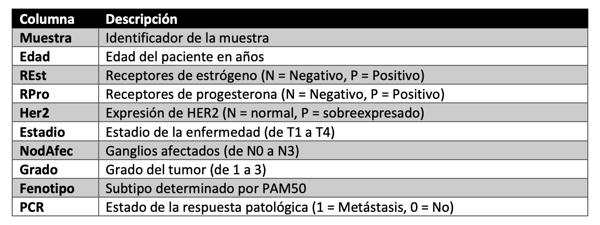

Esta sección pretende abordar la etapa más crucial de todo el proceso de Machine Learning (ML), el curado de los datos, también conocido como pre-procesamiento. Este paso no es simplemente un prefacio al modelo predictivo, sino una fase determinante en la construcción de un modelo de aprendizaje automático robusto y eficaz.
El preprocesamiento de datos es esencial para transformar el aprendizaje automático en un proceso analítico y estructurado. Más allá de la mera alimentación de un algoritmo con datos crudos, esta fase crítica abarca la limpieza, normalización, transformación y extracción de características necesarias. Estas acciones previas al aprendizaje modelan los datos para minimizar distorsiones y anomalías, preservando la integridad del proceso de aprendizaje y fortaleciendo la precisión de los modelos predictivos resultantes, demostrando que la eficacia del modelo está intrínsecamente ligada a la calidad del preprocesamiento aplicado al conjunto de datos original (Obaid, Dheyab, y Sabry 2019).
1.2 Exploración de las Variables
El fichero de datos crudos, facilitado por el Dr. José Manuel Jerez Aragonés, se trata de un fichero .csv con una serie de variables detalladas en la Figura 1.

Figura 1: Descripción de las variables.
Generalmente, se descartarían las variables que no guardan una obvia relevancia clínica con respecto a la variable objetivo (PCR), en este caso, la variable Muestra. Antes de eliminar esta variable, se puede observar que hay diferentes caracteres comunes a las muestras de varios pacientes, estos caracteres representan el estudio al que pertenece el dato, y esto sí que puede tener importancia clínica, ya que podría ayudarnos a comprender si los pacientes de un estudio determinado guardan algún tipo de relación estadística, introduciendo así un posible sesgo en los datos cuya fuerza dependerá de la cantidad de pacientes de ese estudio concreto. Es por esto que se va a crear la variable Estudio.
Finalmente, se guardarán en un vector las variables cateóricas, y en otro, las numéricas. Este bloque se código se repetirá varias veces durante la limpieza de datos, ya que la naturaleza de algunas variables puede cambiar.
Obaid, Hadeel S., Saad Ahmed Dheyab, y Sana Sabah Sabry. 2019. «The Impact of Data Pre-Processing Techniques and Dimensionality Reduction on the Accuracy of Machine Learning», 279-83. https://doi.org/10.1109/IEMECONX.2019.8877011.
Ejecutar el código
---title: "Modelado Predictivo: Cáncer de Mama"author: "Mario Pascual González"date: "`r Sys.Date()`"format: html: theme: darkly # Cambiado a un tema oscuro highlight-style: monokai # Monokai también funciona bien en temas oscuros toc: true toc-depth: 3 toc-title: "Contenidos" toc-float: collapsed: false smooth-scroll: true toc_scroll: true number-sections: true code-fold: true code-tools: true code-summary: "Expand Code" code-line-numbers: false fig-width: 6 fig-height: 4 fig-align: center html-math-method: katex bibliography: references.bib lang: es other-links: - text: LinkedIn icon: linkedin href: https://www.linkedin.com/in/mario-pascual-gonzalez/ - text: Correo Electrónico icon: envelope href: "mailto:mario.pg02@gmail.com?subject=Contacto desde el informe de Modelado Predictivo" - text: Perfil de Github icon: github href: https://github.com/MarioPasc code-links: - text: Repositorio del Informe icon: file-code href: https://github.com/MarioPasc/Modelado-Predictivo-Cancer-de-Mama-R---```{r setup}#| output: false#| echo: false#| warning: false#| library(readxl)library(readr)library(ggplot2)library(dplyr)library(broom)library(DT)library(tidyverse)library(reshape2)library(MASS)data <- read.csv(file = "datos_p1.csv", sep = ";", dec=",")```# Pre-procesamiento de los Datos## JustificaciónEsta sección pretende abordar la etapa más crucial de todo el proceso de *Machine Learning* (ML), el curado de los datos, también conocido como pre-procesamiento. Este paso no es simplemente un prefacio al modelo predictivo, sino una fase determinante en la construcción de un modelo de aprendizaje automático robusto y eficaz. El preprocesamiento de datos es esencial para transformar el aprendizaje automático en un proceso analítico y estructurado. Más allá de la mera alimentación de un algoritmo con datos crudos, esta fase crítica abarca la limpieza, normalización, transformación y extracción de características necesarias. Estas acciones previas al aprendizaje modelan los datos para minimizar distorsiones y anomalías, preservando la integridad del proceso de aprendizaje y fortaleciendo la precisión de los modelos predictivos resultantes, demostrando que la eficacia del modelo está intrínsecamente ligada a la calidad del preprocesamiento aplicado al conjunto de datos original [@8877011]. ## Exploración de las VariablesEl fichero de datos crudos, facilitado por el Dr. José Manuel Jerez Aragonés, se trata de un fichero `.csv` con una serie de variables detalladas en la @fig-desccol.{#fig-desccol fig-align="center"}Generalmente, se descartarían las variables que no guardan una obvia relevancia clínica con respecto a la variable objetivo (**PCR**), en este caso, la variable **Muestra**. Antes de eliminar esta variable, se puede observar que hay diferentes caracteres comunes a las muestras de varios pacientes, estos caracteres representan el estudio al que pertenece el dato, y esto sí que puede tener importancia clínica, ya que podría ayudarnos a comprender si los pacientes de un estudio determinado guardan algún tipo de relación estadística, introduciendo así un posible sesgo en los datos cuya fuerza dependerá de la cantidad de pacientes de ese estudio concreto. Es por esto que se va a crear la variable **Estudio**.```{r}#| warning: false#| label: Variable Estudiodata$Estudio <-ifelse(grepl("^PERU", data$Muestra), "PERU",ifelse(grepl("^MDA", data$Muestra), "MDA",ifelse(grepl("^LBJ", data$Muestra), "LBJ",ifelse(grepl("^Spain", data$Muestra), "Spain",ifelse(grepl("^M", data$Muestra), "M", "otros")))))data$Muestra <-NULL```Finalmente, se guardarán en un vector las variables cateóricas, y en otro, las numéricas. Este bloque se código se repetirá varias veces durante la limpieza de datos, ya que la naturaleza de algunas variables puede cambiar. ```{r}#| warning: false#| label: categoricas y numericasnumericas <-colnames(data)[sapply(data, is.numeric)]categoricas <-colnames(data)[!colnames(data) %in% numericas]```### Exploración de variables categóricas# Referencias::: {#refs}:::